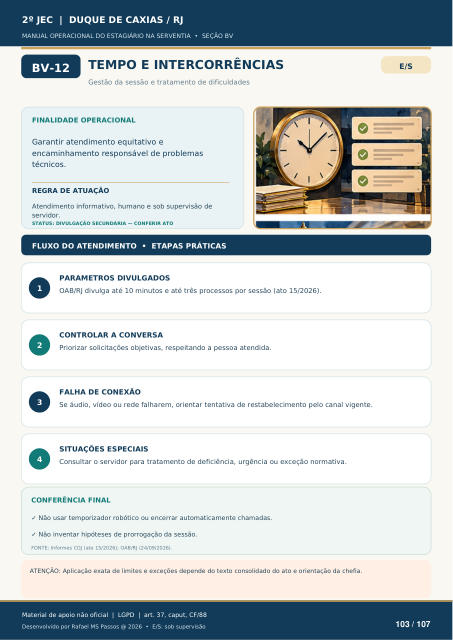

TEMPO E INTERCORRÊNCIAS
Gestão da sessão e tratamento de dificuldades
FINALIDADE OPERACIONAL
Garantir atendimento equitativo e encaminhamento responsável de problemas técnicos.
REGRA DE ATUAÇÃO
Atendimento informativo, humano e sob supervisão de servidor.
STATUS: DIVULGAÇÃO SECUNDÁRIA — CONFERIR ATO
FLUXO DO ATENDIMENTO • ETAPAS PRÁTICAS
PARAMETROS DIVULGADOS
OAB/RJ divulga até 10 minutos e até três processos por sessão (ato 15/2026).
CONTROLAR A CONVERSA
Priorizar solicitações objetivas, respeitando a pessoa atendida.
FALHA DE CONEXÃO
Se áudio, vídeo ou rede falharem, orientar tentativa de restabelecimento pelo canal vigente.
SITUAÇÕES ESPECIAIS
Consultar o servidor para tratamento de deficiência, urgência ou exceção normativa.
CONFERÊNCIA FINAL
Não usar temporizador robótico ou encerrar automaticamente chamadas.
Não inventar hipóteses de prorrogação da sessão.
FONTE: Informes CGJ (ato 15/2026); OAB/RJ (24/09/2026).
ATENÇÃO: Aplicação exata de limites e exceções depende do texto consolidado do ato e orientação da chefia.
Ver também o infográfico original (página 103)
